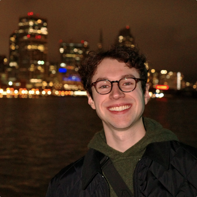

Andrew Burke
Hi, I'm Andrew 👋 I build computer science courses at CodePath, helping college students break into tech. In my free time I like to make videos, learn guitar, play chess, and hit the tennis court!

Hi, I'm Andrew 👋 I build computer science courses at CodePath, helping college students break into tech. In my free time I like to make videos, learn guitar, play chess, and hit the tennis court!